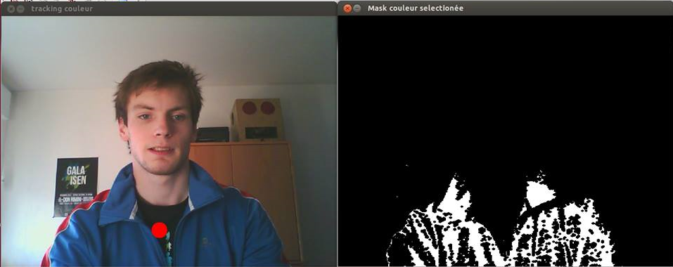
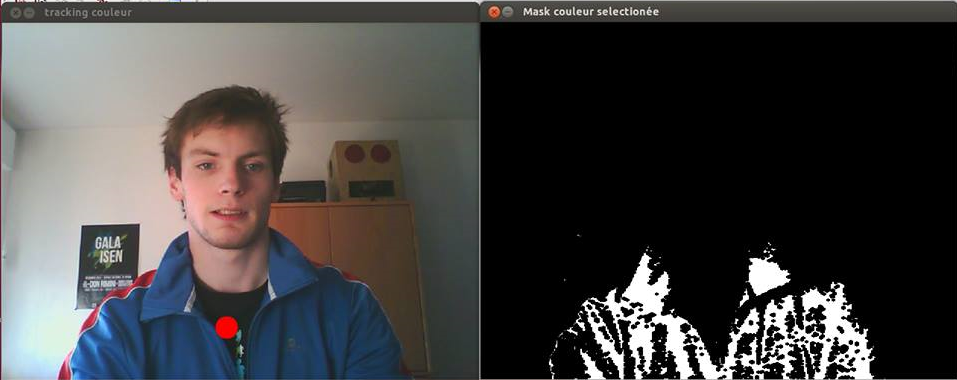

Dans le cadre du Club Elec (de l'Isen) nous devions réaliser un projet informatique ou électronique pour les présentations aux portes ouvertes de l'école. C'est donc dans cette optique que je me suis lancé dans un jeu réalisé en C++ contrôlé par mouvements. Le principe est simple: un tracking couleur réalisé sur le joueur grâce à librairie openCV permet de faire se déplacer le char. Pour la gestion des tirs un simple clic avec une souris sans fil suffit. L'avantage de ce périphérique est qu'il laise une assez grande liberté de mouvement au joueur. L'interface graphique a quant à elle été réalisée avec la librairie SDL.
ci-dessous, quelques screenshots de l'interface graphique:
 

lien d'un projet similaire d'un collègue du club Elec mais avec un capteur kinect: